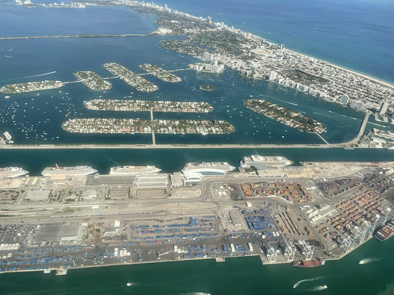

PortMiami
The in-game PortViceCity is PortMiami, the container and cruise terminal on Dodge Island. The official Vice City description calls it "the cruise ship capital of the world," which is Miami's port, and the trailer's speedboat chase and the gantry cranes are the terminals you can still see from the causeway and from the water.

At a glance
- Address
- 1100 NW 6th St, Miami, FL 33133
- Coordinates
- 25.77806, -80.1733
- District
- Vice City
- Confidence
- Strong
- Where it is seen
- Trailer 1 (0:24) and Trailer 2 (2:27)
How confident are we?
The gantry cranes, berth layout and bridge approach in the trailer frame match PortMiami's container terminal on Dodge Island.
PortMiami sits on Dodge Island between Downtown Miami and Miami Beach, reachable by the PortMiami causeway. It handles both containers and cruise ships: the cruise terminal is on the south side, the container yards on the north, and the gantry cranes that appear in Trailer 1 stand over the container berths at the north-east corner of the island.
Where to see the cranes
The container cranes are best seen from the MacArthur Causeway approach, where the road lifts you onto the causeway and gives a clear view across the channel at the island's working end. On the water they are even more dramatic, because you pass underneath the causeway and then look back at the row of cranes against the skyline.
| Detail | The real thing |
|---|---|
| Address | 1100 NW 6th St, Miami, FL 33133 |
| Coordinates | 25.77806, -80.17330 |
| In-game name | PortViceCity |
| District in game | Vice City |
| Landmark | Container gantry cranes, Dodge Island |
| Also | Cruise terminal, PortMiami |
Two ports, two tours
The boat tour is the port tour. It leaves Bayside Marina, runs the channel, and passes PortMiami on the way out to Star Island and Fisher Island, which means you see the working harbour from the water rather than from a car window on a causeway at 70mph. The city tour covers the causeway view as part of the Downtown and Brickell stops.
Security and photography
PortMiami is a secured federal facility. The public areas, the cruise terminal promenade and the viewing points along the causeways are fine for photographs. Do not stop, walk or park anywhere marked as restricted, and keep clear of the freight gates and the rail crossings.
Where it sits on our route
PortMiami is on the water route: the Miami Vice City by Boat tour passes the terminals between Bayside Marina and Fisher Island, and the sunset departure holds long enough to get the cranes lit against the skyline. On the land route you see it from the Venetian Causeway and MacArthur Causeway between stops three and eight.
The cruise side
The cruise terminal on the south end of Dodge Island is a different building from the container yard on the north, and it is where the mega-ships berth. In the game's Vice City this is a single port district combining both, which is a liberty the trailer takes: the game's port is one place, the real one is two, separated by half a mile of island.
Frequently asked questions
Is PortViceCity in GTA 6 PortMiami?
Yes. The trailer's speedboat chase and the row of container gantry cranes match PortMiami on Dodge Island, and The official Vice City description refers to "the VC Port, the cruise ship capital of the world," which is Miami's port.
Can you go inside the port?
Not as a visitor. It is a secured federal facility. The cruise terminal promenade and the public causeway viewpoints are open and are where you get the photographs.
Which tour sees the cranes best?
The boat tour, from the water. On land you pass them quickly on the MacArthur Causeway between Downtown and Brickell.
See it on a Leonida Tours route.
PortMiami is one of the stops we drive past every day. Join a small group and see it in person, with a local guide who knows what to look for.
See this on the tour


Unofficial tours. Leonida Tours is an independent tour company. Our tours are not affiliated with, endorsed, sponsored or licensed by any game publisher or their affiliates. All game titles, characters, place names and trademarks belong to their respective owners and are used here only to describe the real-world locations that inspired them. Every stop on our tours is a real, publicly accessible place. Photography via Unsplash.